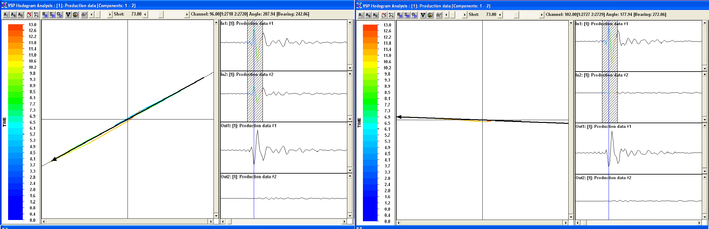
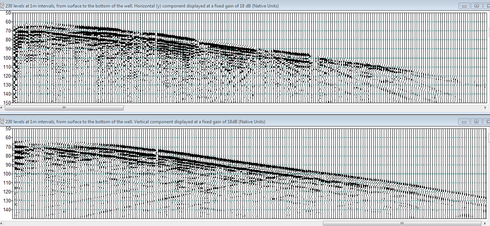
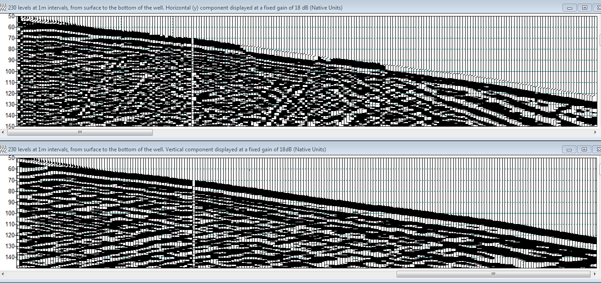

Data Quality
Shear waves
Some of our clients have mentioned seeing P wave frequencies up to 400Hz and converted (PS) wave frequencies only slightly less than that. Most surveys are carried out using 0.125kg of dynamite as the source. If the shear wave frequency is 350Hz and the velocity is 700m/s, then the wavelength of the shear wave is only 2m. With wavelengths this short, there is interesting potential for very detailed imaging around the borehole using these short wavelength shear waves.
Coupling
The method we use to couple the sensor to the casing has been very effective at providing high quality data with low noise. One indication of good coupling comes from looking at the hodograms obtained by plotting the first arrivals of the two horizontal components on the x and y axes. A straight line is the ideal. The figure below shows some typical hodograms obtained with the HDVSP array. (The software added the black arrow that overlays the data).

Signal and Noise
The two images below show raw field data from a near offset 0.125kg dynamite shot, displayed with a fixed gain. One of the horizontal components is shown on top and the vertical component underneath; depth is on the x axis with the top of the well on the left and time is on the y axis. The only difference between the first and second image is the amount of gain applied. The second image has an extra 60dB applied to the data, yet there is still no evidence of noise before the first breaks.

Adding 60dB to the data seen above, gives:

Note that both components show clean first breaks and no background noise.
The polarity changes on the horizontal component are normal and are the result of a gradual corkscrew rotation of the array as it is deployed. . The weak first breaks seen on some channels of the horizontal component are normal for field data that has not been rotated since that component would be perpendicular to the raypath.